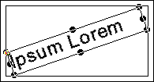
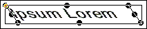
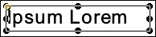
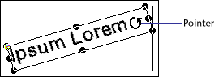
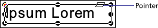
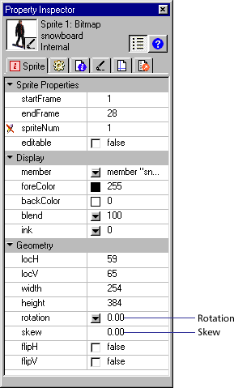

Using Director > Sprites > Changing the appearance of sprites > Rotating and skewing sprites
Using Director > Sprites > Changing the appearance of sprites > Rotating and skewing sprites |
Rotating and skewing sprites
You can rotate and skew sprites to turn and distort images and to create dramatic animated effects. You rotate and skew sprites on the Stage by dragging. To rotate and skew sprites more precisely, use Lingo or the Property Inspector to enter degrees of rotation or skew. The Property Inspector is also useful for rotating and skewing several sprites at once by the same angle.
Director can rotate and skew bitmaps, text, vector shapes, Flash movies, QuickTime videos, and animated GIFs.
Director rotates a sprite around its registration point, which is a marker that appears on a sprite when you select it with your mouse. By default, Director assigns a registration point in the center of all bitmaps. You can change the location of the registration point using the Paint window. See Changing registration points.
Rotation changes the angle of the sprite. Skewing changes the corner angles of the sprite's rectangle.

Rotated sprite

Skewed sprite
After a sprite is rotated or skewed, you can still resize it.
Director can automatically change rotation and skew from frame to frame to create animation. See Tweening other sprite properties.
To rotate or skew a sprite on the Stage:
1 |
Select a sprite on the Stage. |
2 |
Choose Window > Tool Palette to display the Tool palette. |
3 |
Click the Rotate tool in the Tool palette. |
You can also press Tab while the Stage window is active to choose the Rotate tool. |
|
The handles around the sprite change to indicate the new mode.
 |
|
4 |
Do either of the following: |
To rotate the sprite, move the pointer inside the sprite and drag in the direction you want to rotate.
 |
|
To skew the sprite, move the pointer to the edge of the sprite until it changes to the skew pointer and then drag in the direction you want to skew.
 |
|
To rotate or skew a sprite with the Property Inspector:
1 |
Select the sprite you want to rotate or skew and click the Sprite tab of the Property Inspector (List view). |
2 |
To rotate the selected sprite, enter the number of degrees in the Rotation field. |
3 |
To skew the selected sprite, enter the number of degrees in the Skew field.
 |
To resize a rotated or skewed sprite, do one of the following:
Click the Rotate or Skew tool and drag any of the sprite's handles. Alt-drag (Windows) or Option-drag (Macintosh) to maintain the sprite's proportions as you resize. |
|
Enter new values in the Sprite tab of the Property Inspector. |
|
Director resizes the sprite at the current skew or rotation angle. |
To restore a skewed or rotated sprite to its original orientation:
Choose Modify > Transform > Reset Rotation and Skew or Reset All.
To skew a sprite with Lingo:
Set the skew sprite property. See skew.